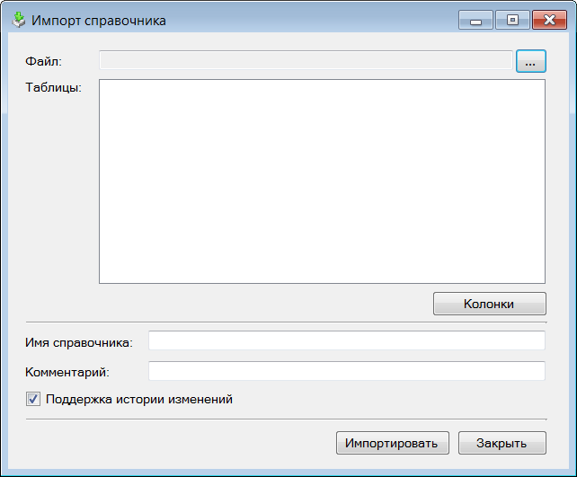

Общие сведения |
Используя API T-FLEX DOCs можно также разрабатывать самостоятельные приложения, а затем использовать их совместно с T-FLEX DOCs.
Примером такого приложения является "UnitConverter" (перевод различных математических и физических величин), входящее в комплект поставки T-FLEX DOCs.
Разработка отдельных приложений производится на платформе .NET Framework в среде Visual Studio. Готовое приложение предоставляется в виде скомпилированного исполняемого файла (EXE).
Вызов отдельных приложений (на примере "ImportReference")
